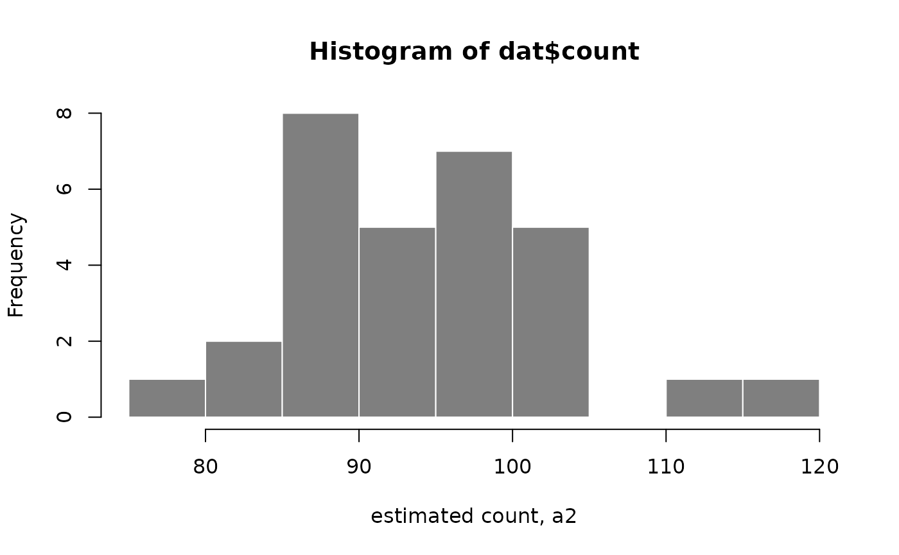

SEESAW: Statistical Estimation Of Allelic Expression Using Salmon And Swish
Euphy Wu, Michael Love
July 2022
Source:vignettes/Bioc2022AllelicExpression.Rmd
Bioc2022AllelicExpression.RmdOverview
Description
In this workshop, we will cover a newly developed suite of tools for
performing analysis of allelic expression in Bioconductor. You will
learn about how we use upstream tools like g2gtools and
Salmon to quantify allelic expression for RNA-seq, and then
how to explore the data in R using the fishpond package.
Altogether we call this suite of tools SEESAW for “Statistical
Estimation Of allelic Expression Using Salmon And sWish”.
Background and other methods
The SEESAW set of methods for quantifying and analyzing allelic data is similar to mmseq, in which uncertainty of assignment of reads to isoforms and alleles is estimated, stored, and using in statistical testing. It is also similar to EMASE, which provides quantification at isoform and allele level; SEESAW also use the same upstream pipeline as EMASE for construction of diploid reference transcripts.
Our approach differs from existing methods for detecting allelic imbalance in RNA-seq data such as WASP or the Bioconductor package AllelicImbalance, in that we do not focus on pileup of reads on particular SNPs, but instead integrate the isoform- and allele-level information contained in reads aligning to entire transcripts (including both SNP and indel variation). However, these existing methods can be used across patients with different genomes, while the SEESAW methods are designed for analyzing replicate samples with the same diploid genomes (e.g. F1 crosses, or time series of human cell lines).
A recent method for isoform- and allele-level testing is the Bioconductor package PAIRADISE, which quantifies reads that contain both allelic and isoform-level information: those that contain both a heterozygous SNP and a splice juntion. Another relevant recently developed method is ASEP, which allows for gene-level allelic imbalance detection, accounting for unknown genotype of other nearby regulatory variants. PAIRADISE and ASEP are therefore applicable across populations of genotypically diverse individuals. We link to these publications for background reading below.
Pre-requisites
- Some basic background of RNA biology, e.g. what are genes, what are isoforms/transcripts?
- Some familiarity with RNA-seq data, e.g. what are reads?
- Some familiarity with working with SummarizedExperiment objects will help.
Background reading
- Tools and best practices for data processing in allelic expression analysis
- A vast resource of allelic expression data spanning human tissues
- Haplotype and isoform specific expression estimation using multi-mapping RNA-seq reads (mmseq)
- Hierarchical analysis of RNA-seq reads improves the accuracy of allele-specific expression (EMASE)
- Detecting Allele-Specific Alternative Splicing from Population-Scale RNA-Seq Data (PAIRADISE)
- ASEP: Gene-based detection of allele-specific expression across individuals in a population by RNA sequencing
Time outline
An example for a 45-minute workshop:
| Activity | Time |
|---|---|
| Intro to allelic quant | 15m |
| Exploration of data in R | 15m |
| Testing and visualization | 15m |
What is allelic expression

Let us assume for this workshop that we are studying a diploid organism, and we focus on the genes with two copies (so genes on the autosome, and e.g. chrX for XX individuals). We do not consider here allelic quantification in cases of complex copy number such as tumor gene expression.
In most RNA-seq pipelines, we are concerned with total expression of genes or transcripts, where we do not distinguish between RNA transcripts from either of the two chromosomes. Suppose the light blue region highlighted above is a gene, and there are two alleles (B and b) which differ by one or more genetic variants. In the case that there are genetic variants falling within the exons of the gene, some RNA-seq reads may contain information that allows us to determine the origin of the RNA transcript, whether from the B chromosome or the b chromosome. Typically, RNA-seq analysis pipelines just are concerned with counting reads aligning to the light blue region, regardless of which chromosome. Some pipelines will attempt to identify which splice isoforms these align to, but do not attempt to distinguish between alleles.
In SEESAW (and mmseq and EMASE) we attempt to distinguish both allele
and isoform from the RNA-seq reads. Again, note that, while there is
always expression from two alleles, only in the middle two cases above,
with one or genetic variants falling in the exons of the highlighted
gene, can we recover allelic information from RNA-seq reads. In this
workshop, we will therefore look at two counts per sample, one count for
the a2 or reference allele, and the other count for the
a1 or alternate allele. In our case, the reference will be
the C57BL/6J (or “B6”) mouse genome, and the alternate allele will be
the CAST/EiJ mouse genome (we will focus on the B6xCAST F1 hybrid
mouse).
Allelic imbalance
The expression of the two alleles may differ for a variety of reasons. Imagine a single cell with two copies of a gene that may be transcribed. You may be familiar with the concept of “transcriptional bursting”:
Mammalian gene expression is inherently stochastic, and results in discrete bursts of RNA molecules that are synthesized from each allele.
-Larsson et al. “Genomic encoding of transcriptional burst kinetics.” Nature 565, 251–254 (2019) https://doi.org/10.1038/s41586-018-0836-1. (Other papers describing the stochastic nature of expression from each allele are the SCALE and scBASE method papers.)
We might expect that these stochastic differences between the two alleles would average out if we look at many cells, as in bulk RNA-seq. But in some cases, we may see systematic differences between the two alleles. Some reasons why:
- Interesting biological differences
- Technical artifacts
As in Figure 1 of Castel et al. (2015), the largest differences seen in allelic imbalance are likely mapping bias or genotyping errors (e.g. #2 above). If we map reads to the reference genome, then we will generate a systematic bias where reads from the alternate allele will tend to have lower counts. Likewise, if one of the two genomes has lower quality, even if we map reads to both genomes or transcriptomes (as in SEESAW) we will see a systematic bias towards the higher quality genome. Here we assume both genomes are equally free of errors, but assessing systematic bias is an important part of allelic analysis (e.g. histograms or MA plots of the difference between the mapping rate of the two alleles across all genes).
However, of the type #1 above, there are some possibilities for the source of allelic differences in RNA abundance:
- Epigenetic (e.g. the common example of chrX inactivation)
- Nonsense-mediated decay (NMD)
- Cis-genetic regulation (cGR)
In the first case, one allele is genomically imprinted, which may involve DNA methylation and histone modifications depending on the species. In the second and third case, RNA is often produced from both alleles, but one is degraded at a higher rate (NMD) or produced at a higher rate (cGR).
Our motivation in developing SEESAW was particular on detecting cGR, as we are interested in how non-coding variants cis to a gene may affect transcription. These could affect transcription through alteration of transcription factor binding sites (TFBS) or through changes to splicing. While both TFBS and splicing changes are of interest, in this workshop we will focus on non-coding variation that affects TFBS and therefore modulates transcriptional activity at the promoter.
We therefore will focus on cases where there is allelic imbalance of a transcript, and we can detect this imbalance with RNA-seq (center two cases in the above diagram), and we hypothesize that this imbalance is the result of a heterozygous variant in some regulatory region of the gene. As we only focus here on RNA-seq, we will not have additional data that allows us to locate the source of the regulatory change across the two alleles. For this, it would be useful to have complementary ATAC-seq or ChIP-seq (if a particular TF is of interest).
SEESAW pipeline
At the beginning of the workshop, we will give an overview of the steps that need to take place outside of R, before we import the allelic data into Bioconductor. These are outlined as the first parts of the pipeline in the diagram below. These are also described in detail in the allelic vignette for the fishpond package.
The input to the pipeline of methods is RNA-seq data (FASTQ files), information about the diploid reference genome (e.g. VCF file), and information about the isoforms (e.g. GTF file). The SEESAW suite of methods is currently designed to work for experiments with multiple replicates of samples with the same diploid genome, e.g. F1 crosses, or time series of human cell lines.
The R code below will begin at the center blue square with
importAllelicCounts(), assuming that diploid quantification
with bootstrap replicates for uncertainty has already been
performed.

Links to relevant software:
- g2gtools for constructing the diploid transcriptome
- Salmon, run with bootstrap inferential replicates
Importing allelic counts
The following five un-evaluated code chunks were used to import the allelic quantification from Salmon into R. These are un-evaluated, as the original data is too large to include in this package.
First, we define coldata and txps, which
describe the sample metadata, and the genomic ranges of the transcripts
that were quantified (the haploid reference transcripts). We do not yet
have a convenient way to describe the location of the transcripts in the
diploid genome, so we still rely on a single reference genome here,
although a diploid genome was used for quantifying allelic
expression.
# `files` points to `quant.sf` files in original Salmon directories
# other vectors here describe the samples
coldata <- data.frame(cross, day, files, names)
ah <- AnnotationHub()
#query(ah, c("EnsDb","102","Mus musculus"))
edb <- ah[["AH89211"]]
txps <- transcripts(edb)We can group to the gene level with the following
group_id:
The following code chunk imports the allelic data, creating a “wide”
SummarizedExperiment object which will have 2x the number of
columns as the samples listed in coldata. We specify the
strings that distinguish the a1 and a2 allele
in the transcript FASTA file (these are suffices that follow the
transcript name, separated with an underscore,
e.g. ENST123_ref and ENST123_alt. By
convention, the a2 allele describes the reference allele.
In the gse object (gene-level SummarizedExperiment), the
a2 allelic counts will appear as the first columns followed
by the a1 allelic counts. Here we supply txps
as a GRanges object with a metadata column
group_id that describes how we collapse transcript-level
counts.
library(fishpond)
gse <- importAllelicCounts(
coldata, a1="alt", a2="ref",
format="wide", tx2gene=txps,
)Finally, we performed minimal filtering on the features:
# filtering out lowly expressed features:
keep <- rowSums(assay(gse) >= 10) >= 6
table(keep)
gse <- gse[keep,]Alternatively, we can group transcript-level counts to the
transcription start site (TSS) level using the following code chunk to
define txps. makeTx2Tss() is a convenience
function in fishpond. The maxgap=50 argument means
we will group together transcripts that have TSS that fall within 50bp
of each other.
txps <- makeTx2Tss(edb, maxgap=50) %>%
select(tx_id, gene_id, group_id, tss)Q: why would we want to collapse to TSS level?
Mouse osteoblast differentiation
We have two pre-packaged datasets as part of this workshop package, one where allelic counts from an RNA-seq experiment are summarized to the gene level, and another where they are summarized to the TSS level.
The datasets are described in the man pages (see References tab). Briefly, mouse osteoblast cells were differentiated over a time course from day 2 to day 18. The data has been subset to just the genes on chr1. A reference for the experiment is:
Kemp JP, Medina-Gomez C, Estrada K, St Pourcain B et al. Phenotypic dissection of bone mineral density reveals skeletal site specificity and facilitates the identification of novel loci in the genetic regulation of bone mass attainment. PLoS Genet 2014 Jun;10(6):e1004423. PMID: 24945404 https://www.ncbi.nlm.nih.gov/pmc/articles/PMC4063697/
…more about osteoblasts and their genetic importance…
Q: why would we be interested in allelic expression during osteoblast differentiation?
Explore allelic counts
We load the gene-level dataset created with
importAllelicCounts():
library(SummarizedExperiment)
library(Bioc2022AllelicExpression)
data(osteoblast_gene_chr1)
osteoblast_gene_chr1
#> class: RangedSummarizedExperiment
#> dim: 1211 36
#> metadata(3): tximetaInfo countsFromAbundance alleles
#> assays(33): counts abundance ... infRep29 infRep30
#> rownames(1211): ENSMUSG00000001138 ENSMUSG00000001143 ...
#> ENSMUSG00000118219 ENSMUSG00000118607
#> rowData names(9): gene_id gene_name ... symbol entrezid
#> colnames(36): 129xB6-d02-a2 129xB6-d04-a2 ... CASTxB6-d16-a1
#> CASTxB6-d18-a1
#> colData names(3): allele cross day
g <- osteoblast_gene_chr1The sample metadata:
colData(g)
#> DataFrame with 36 rows and 3 columns
#> allele cross day
#> <factor> <factor> <numeric>
#> 129xB6-d02-a2 a2 129xB6 2
#> 129xB6-d04-a2 a2 129xB6 4
#> 129xB6-d06-a2 a2 129xB6 6
#> 129xB6-d08-a2 a2 129xB6 8
#> 129xB6-d10-a2 a2 129xB6 10
#> ... ... ... ...
#> CASTxB6-d10-a1 a1 CASTxB6 10
#> CASTxB6-d12-a1 a1 CASTxB6 12
#> CASTxB6-d14-a1 a1 CASTxB6 14
#> CASTxB6-d16-a1 a1 CASTxB6 16
#> CASTxB6-d18-a1 a1 CASTxB6 18For each sample and each allele, we have counts and also bootstrap
replicates. The bootstrap replicates are from Salmon, by specifying
--numBootstraps 30 during quantification.
Q: Why do we need bootstrap replicates?
We can use fishpond functions to do some basic exploration of the allelic counts.
library(fishpond)
assayNames(g)
#> [1] "counts" "abundance" "length" "infRep1" "infRep2" "infRep3"
#> [7] "infRep4" "infRep5" "infRep6" "infRep7" "infRep8" "infRep9"
#> [13] "infRep10" "infRep11" "infRep12" "infRep13" "infRep14" "infRep15"
#> [19] "infRep16" "infRep17" "infRep18" "infRep19" "infRep20" "infRep21"
#> [25] "infRep22" "infRep23" "infRep24" "infRep25" "infRep26" "infRep27"
#> [31] "infRep28" "infRep29" "infRep30"
dat <- getTrace(g, idx=1, samp_idx="129xB6-d02-a2")
hist(dat$count, border="white", col="grey50", xlab="estimated count, a2")
This plot shows the distribution of estimated counts for the first
feature, and for the day 2 sample of the 129xB6 cross, reference allele.
We can also visualize the distributions for all samples using
plotInfReps():
plotInfReps(g, idx=1, x="allele", legend=TRUE)
We can also group the allelic counts ordered by sample, e.g.:
gcast <- g[,g$cross == "CASTxB6"]
plotInfReps(gcast, idx=1, x="allele", cov="day", legend=TRUE)
In the above plot, the samples are ordered by sample, as if
day x allele were a categorical variable. We
can also plot day on its original continuous scale. To do
so, we use points and lines to represent the bootstrap distribution
instead of boxplots. To draw the line, we need to first compute the
bootstrap variance, which can be computed with the
computeInfRV() function (InfRV = “inferential relative
variance”, a useful diagnostic for comparing uncertainty across
features):
gcast <- computeInfRV(gcast)
plotInfReps(gcast, idx=1, x="day", cov="allele",
shiftX=.2, legend=TRUE)
Filter non-informative features
Some features have no sequence difference between the two alleles.
One easy way to detect these is to look at a single bootstrap replicate,
e.g. the first one infRep1. If this bootstrap sample gives
the same count to each allele, across all samples, this implies either
that the sequence was identical across alleles, or there were no reads
covering the part of the transcript sequence that contains a difference
across alleles. We remove these from the dataset, as they are
non-informative for allelic imbalance analysis.